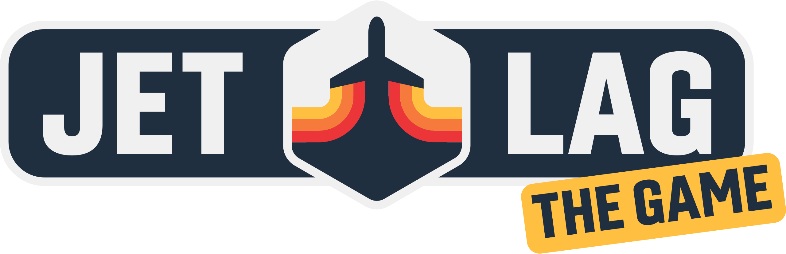
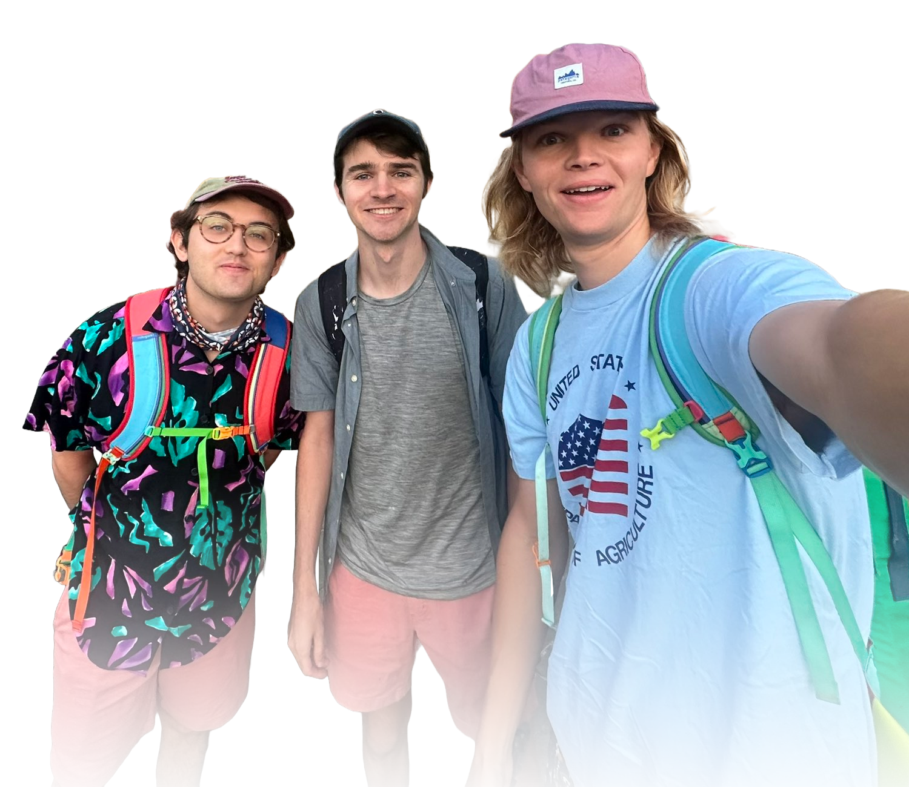
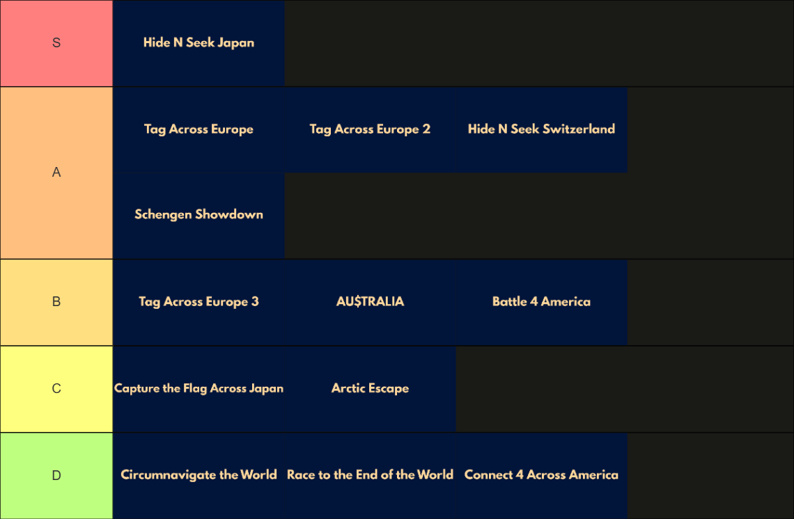

Jet Lag: The Game is a chaotic travel competition series where contestants race across countries with wild rules, weird strategies, and zero sleep. Whether they’re chasing each other through cities, playing tag across time zones, or trying to touch every U.S. state in 100 hours, it’s part travel vlog, part board game, and completely unhinged. It’s like The Amazing Race — but with more spreadsheets and existential breakdowns.
Players

Sam Denby
Sam Denby (born March 17, 1998) is one of the main hosts of Jet Lag: The Game and runs Wendover Productions. He’s been in every season of Jet Lag and has won five or six times. In team games, he plays with a guest. Sam also explains the rules and recaps what happened in the show, except in one season where Ben did it.
Ben Doyle
Ben Doyle (born March 30, 1999) is one of the main hosts and editors of Jet Lag: The Game, alongside Sam and Adam. He used to write more for Half as Interesting but now focuses on Jet Lag. Ben has played in every season and has won five times, including three wins with Adam. He’s from Baltimore and lived in Los Angeles as a kid. Now, he lives in Chelsea, New York City.
Adam Chase
Adam Chase (born November 6, 1996) is one of the main hosts and editors of Jet Lag: The Game. He used to write for Half as Interesting but now focuses on Jet Lag. Adam has played in every season and won five times, including three with Ben. Much of his non-Jet Lag information comes from LinkedIn. He is in a relationship with Maeve Dunigan.
Seasons
Connect 4 Across America
In this season, Sam and Brian - from Real Engineering - team up against Ben and Adam and race to see who can connect 4 US states the fastest!
Winner: Sam Denby & Brian McManus
Season LinkCircumnavigate The World
In this thrilling second season, Sam and Joseph - from Real Life Lore - verse Ben and Adam to circumnavigate the world!
Winner: Ben Doyle & Adam Chase
Season LinkTag Across Europe
In the most popular season of Jet Lag so far, Sam, Ben, and Adam play a simple game of Tag across Europe's extensive rail systems.
Winner: Adam Chase
Season LinkBattle 4 America
Brian is back in this epic season, where the teams race around America and try to claim the most states.
Winner: Ben Doyle & Adam Chase
Season LinkRace to the End of the World
With Toby, from Tibees, the teams travel on an epic road trip from the top to the bottom of New Zealand!
Winner: Sam Denby & Toby Hendy
Season LinkCapture the Flag Across Japan
In the realm of Japan, teams, with Scotty from Strange Parts, will race to collect vending machine items and bring them to their zone.
Winner: Ben Doyle & Adam Chase
Season LinkTag Across Europe 2
In this sequel, the crew will return to Europe once again, and play another game of tag!
Winner: Ben Doyle
Season LinkArctic Escape
Returning to the USA, the teams, with Michelle Khare, race from the northernmost point to the southernmost point of the United States.
Winner: Sam Denby & Michelle Khare
Season LinkHide + Seek
Sam Ben and Adam come to Switzerland and play a revised game of Hide and Seek among the snow and mountains!
Winner: Adam Chase
Season LinkAU$TRALIA
With Toby returning, the teams travel to Australia and try to clain the most states by reserving money on each.
Winner: Sam Denby & Toby Hendy
Season LinkTag Across Europe 3
Back to Europe again, the crew play their third game of tag, this time around the northern Italian region.
Winner: Sam Denby
Season LinkHide + Seek: Japan
Sam Ben and Adam travel back to Japan and play a game of Hide and Seek, this time with a few extra rules...
Winner: Ben Doyle
Season LinkSchengen Showdown
With Tom Scott, the teams travel throughout the vast Schengen Area and claim countries with challenges.
Winner: Ben Doyle & Adam Chase
Season LinkTier List
My personal choice

Leaderboard
| Player | Seasons Won | Seasons Played |
|---|---|---|
| Ben Doyle | 6 | 13 |
| Adam Chase | 6 | 13 |
| Sam Denby | 5 | 13 |
| Toby Hendy | 2 | 2 |
| Brian McManus | 1 | 2 |
| Michelle Khare | 1 | 1 |
| Joseph Pinsenti | 0 | 1 |
| Scotty Allen | 0 | 1 |
| Tom Scott | 0 | 1 |